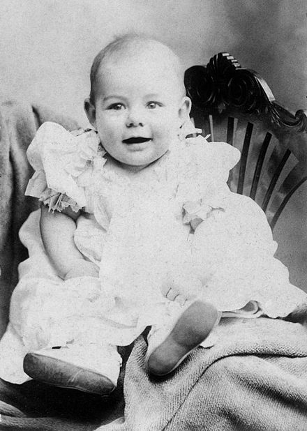
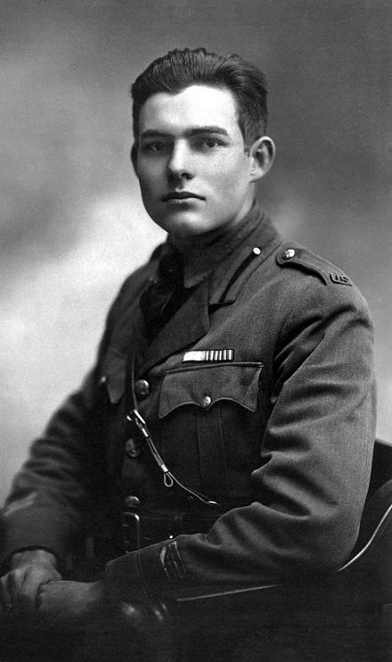
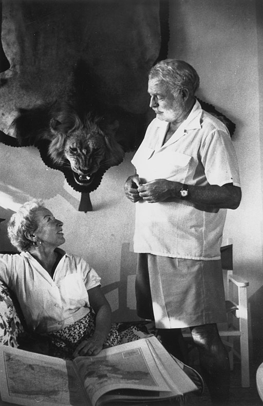

Биография
Детство и юность
Эрнест Хемингуэй родился 21 июля 1899 года в привилегированном пригороде Чикаго — деревне Ок-Парк (Иллинойс, США). Его отец Кларенс Эдмонт Хемингуэй (1871—1928) был врачом, а мать, Грейс Эрнестин Холл-Хемингуэй (? — 1951) — оперной певицей. Родители оба получили хорошее образование и в консервативной общине Ок-Парка пользовались отличной репутацией. Известный архитектор Фрэнк Ллойд Райт говорил про данное сообщество так: «Там очень много церквей, в которые ходит так много хороших людей» (англ. «So many churches for so many good people to go to»). После свадьбы Кларенс и Грейс Хэмингуэи некоторое время жили с отцом Грейс, Эрнестом Холлом, в честь которого пара назвала своего первого сына. Позже Эрнест Хемингуэй говорил, что не любил своё имя, которое у него «ассоциировалось с наивным, даже глупым героем пьесы Оскара Уайльда „Как важно быть серьёзным“ (англ. «The Importance of Being Earnest»)». В конце концов семья переехала в семикомнатный дом в с респектабельном районе с музыкальной студией для Грейс и медицинским кабинетом для Кларенса.
Мать Хемингуэя одевала маленького Эрнеста (который был первым мальчиком в семье), как девочку, однако так было принято в то время во многих семьях. Она впервые обрезала его волосы, когда ему было 6 лет, и называла его «куколка» (англ. dolly). Биографы предполагают, что эти странные отношения Грейс к своему сыну повлияли на всю его жизнь. Сюжет о поздней обрезке волос у мальчика неоднократно возникает в произведениях Хемингуэя, например, в романе «Райский сад» (англ. «The Garden of Eden»). Кроме того, в ряде рассказов писателя персонажи по той или иной причине становятся бессильными и отчаянно пытаются вернуть свою мужественность, как умирающий писатель в рассказе «Снега Килиманджаро» (англ. «The Snows of Kilimanjaro»). Позже Хемингуэй признавался, что ненавидел свою мать, хотя его племянник Джон Сэнфорд, сын Марселины, который позже стал академиком, сказал в интервью, что противные слова автора о его матери являются «прикрытием» его глубокой любви к ней. Биограф Майкл С. Рейнольдс отметил, что Эрнест унаследовал от матери энергию и энтузиазм. Отец Хемингуэя очень гордился своими колониальными предками и в соответствие с религиозными догмами запрещал в семье танцевать, пить, курить и играть в азартные игры. Этот большой широкоплечий мужчина, в отличие от своей жены, держал детей в строгой дисциплине и, если считал необходимым, мог высечь Хемингуэя кожаным ремнём. Чёрствый врач является персонажем одного из ранних рассказов Хемингуэя — «Доктор и его жена» (англ. «The Doctor and The Doctor's Wife». В нём разговоры между врачом и его женой основаны на реальных разговорах между родителями писателя.
У семьи, кроме зимнего дома в Ок-Парке, был ещё коттедж «Уиндемир» на озере Валлун недалеко от города Петоски в штате Мичиган, где отец учил четырёхлетнего Эрнеста охотиться, ловить рыбу, строить убежища в лесах и на берегах озёр Северного Мичигана. Его ранние опыты в мире природы привили ему страсть к приключениям и жизни в отдалённых или изолированных районах.
Бокс научил меня никогда не оставаться лежать, всегда быть готовым вновь атаковать… быстро и жёстко, подобно быку.
Первая мировая война
После вступления США в Первую мировую войну Хемингуэй решил пойти добровольцем, но его не взяли из-за повреждённого левого глаза. В начале 1918 года Эрнест Хемингуэй отозвался на кадровый поиск Красного Креста в Канзас-Сити и вызвался быть водителем скорой помощи на итальянском фронте. В мае он покинул Нью-Йорк и прибыл в Париж, который находился под обстрелом немецкой артиллерии. В июне он добрался до Италии, где, вероятно, впервые встретился с Джоном Досом Пассосом, с которым на протяжении многих десятилетий имел нелёгкие отношения. Во время своего первого дня в Милане он был отправлен к месту взрыва на военном заводе, где спасатели вытаскивали из развалин останки работниц. Хемингуэй описал этот инцидент в своей научно-популярной книге «Смерть после полудня» (англ. Death in the Afternoon): «Я помню, что после того, как мы довольно тщательно искали останки погибших, мы собирали фрагменты». Через несколько дней он был вn Фоссальте-ди-Пьяве.
8 июля 1918 года Хемингуэй был тяжело ранен миномётным огнём, возвращаясь из столовой с шоколадом и сигаретами для солдат на передовой. Несмотря на раны, он помогал спасать итальянских солдат, за что получил итальянскую серебряную медаль за отвагу. Будучи 18-летним юношей, он описывал этот инцидент: «Если вы идёте на войну мальчиком, вы имеете большую иллюзию бессмертия. Других людей убивают, а вас — нет… Потом, когда вы в первый раз получаете тяжёлые ранения, вы теряете эту иллюзию и знаете, что это может случиться и с вами». Он получил серьёзные осколочные ранения обеих ног, прошёл немедленную операцию и провёл пять дней в полевом госпитале до того, как был переведён на оздоровление в больницу Красного Креста в Милане. Он провёл шесть месяцев в больнице, где из него извлекли 26 осколков, при этом на теле Эрнеста было более двухсот ран. Вскоре его перевезли в Милан, где простреленную коленную чашечку врачи заменили алюминиевым протезом.
Вторая мировая война
Куба
В 1949 году писатель переехал на Кубу, где возобновил литературную деятельность. Ещё в 1940 году он приобрёл в пригороде Гаваны дом в поместье «Финка Вихия» (исп. Finca Vigía). Там была написана повесть «Старик и море» (1952).
В 1953 году Эрнест Хемингуэй получил Пулитцеровскую премию за повесть «Старик и море». Это произведение повлияло также на присуждение Хемингуэю Нобелевской премии по литературе в 1954 году. В 1956 году Хемингуэй начал работу над автобиографической книгой о Париже 1920-х годов — «Праздник, который всегда с тобой», которая вышла только после смерти писателя.Он продолжал путешествовать и в 1953 году в Африке попал в серьёзную авиакатастрофу.В 1954 году в честь 55-летия, незадолго до присуждения Нобелевской премии, Хемингуэй получил в награду от правительства Батисты орден «Карлос Мануэль де Сеспедес». Несмотря на это, в 1959 году он приветствовал свержение диктатора и Кубинскую революцию. В 1957 году на Кубе побывал мастер портретной фотографии Юсуф Карш, который сделал ряд портретов писателя, из которых наибольшей известностью пользуется тот, где Хемингуэй позирует в свитере грубой вязки.
Последние годы жизни
В конце июля 1960 года Хемингуэй покинул Кубу и вернулся в США, в Нью-Йорк, где пробыл пару недель, после чего неожиданно решил повидать своего друга матадора и одного из героев документального романа «Опасное лето» Антонио Ордоньеса и улетел в Испанию[93]. Вернувшись в октябре в США, он поселился в городке Кетчум (штат Айдахо), в котором в 1959 году он купил дом. Хемингуэй страдал от ряда серьёзных заболеваний. Кроме того, близкие люди отмечали ухудшение его психического состояния. По словам его жены Мэри Уэлш, Хемингуэй стал полной противоположностью тому, кем он был раньше — из общительного, полного жизни человека с бьющей через край энергией он превратился в замкнутого и молчаливого. Никто из трёх ближайших к писателю людей не мог точно сказать, что с ним происходит. Врач из Сан-Вэлли Джордж Савиерс рекомендовал положить Хэмингуэя в клинику широкого профиля Майо в г. Рочестер (США) для обследования. Хемингуэй очень скептически относился к психиатрам, поэтому причиной обследования для него называлась гипертония, реальной же причиной была депрессия, в которой он находился. В клинике при обследовании у Хэмингуэя был диагностирован сахарный диабет в начальной стадии, что усугубило его состояние. Он погрузился в депрессию с паранойей по поводу слежки. Ему казалось (либо это так и было на самом деле), что за ним всюду следуют агенты ФБР и что повсюду расставлены жучки, телефоны прослушиваются, почта прочитывается, банковский счёт постоянно проверяется. Он мог принять случайных прохожих за агентов. В начале 1980-х годов, когда архивное дело Э. Хемингуэя в ФБР было рассекречено, факт слежки за писателем подтвердился — за последние пять лет жизни писателя в дело были добавлены два новых донесения. 2 июля 2011 года в рубрике «Мнения» газеты The New York Times друг и биограф писателя А. Хотчнер высказал версию, что ФБР действительно активно следило за Хемингуэем.